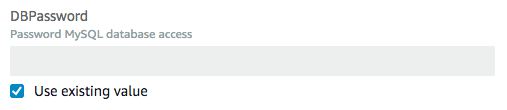

直接更新堆栈
在您需要将更新快速部署到堆栈时，请执行直接更新。利用直接更新，您可以提交模板或用于指定针对堆栈中资源的更新的输入参数，AWS CloudFormation 将立即部署更新。如果您希望使用模板来进行更新，则可修改当前模板并将其存储在本地或存储在 Amazon S3 桶中。
对于不支持更新的资源属性，您必须保留当前值。要预览 AWS CloudFormation 在您更新之前将对堆栈进行的更改，请使用更改集。有关更多信息，请参阅使用更改集更新堆栈。
注意
更新堆栈时，AWS CloudFormation 可能会中断资源或者替换更新的资源，具体取决于您所更新的属性。有关资源更新行为的更多信息，请参阅堆栈资源的更新行为。
更新 AWS CloudFormation 堆栈 (控制台)
-
登录到 AWS Management Console 并打开 AWS CloudFormation 控制台 https://console.aws.amazon.com/cloudformation
。 -
在 AWS CloudFormation 控制台
上，选择堆栈列表中您希望更新的正在运行堆栈。 -
在堆栈详细信息窗格中，选择 Update (更新)。
-
如果您尚未修改堆栈模板，请选择 Use current template (使用当前模板)，然后选择 Next (下一步)。
如果您已修改模板，请选择 Replace current template (替换当前模板)，然后指定在 Specify template (指定模板) 中指定更新模板的位置：
-
对于在计算机本地存储的模板，选择 Upload a template file (上传模板文件)。选择 Choose File (选择文件) 以导航到此文件并选中它，然后选择 Next (下一步)。
注意
如果您上传了一个本地模板文件，AWS CloudFormation 将其上传至您的 AWS 账户中的 Amazon Simple Storage Service（Amazon S3）桶。如果您还没有使用 AWS CloudFormation 创建的 S3 存储桶，它会为每个区域创建一个唯一的存储桶，您可以向其上传模板文件。如果您的 AWS 账户中已有使用 AWS CloudFormation 创建的 S3 存储桶，则 AWS CloudFormation 将模板添加到此存储桶中。
要记住的有关 AWS CloudFormation 所创建的 S3 存储桶的注意事项
-
具有您的 AWS 账户中的 Amazon S3 权限的任何人均可访问桶。
-
AWS CloudFormation 创建默认情况下已启用服务器端加密的存储桶，从而对存储桶中存储的所有对象进行加密。
您可以使用 Amazon S3 控制台（https://console.aws.amazon.com/s3/
）或 AWS CLI 直接管理 AWS CloudFormation 创建的桶的加密选项。有关更多信息，请参阅《Amazon Simple Storage Service 用户指南》中的 S3 桶的 Amazon S3 默认加密。 -
您可通过手动将模板上传到 Amazon S3 来使用您自己的存储桶并管理其权限。每当您创建或更新堆栈时，请指定模板文件的 Amazon S3 URL。
-
-
对于存储在 Amazon S3 存储桶中的模板，选择Amazon S3 URL。输入或粘贴模板的 URL，然后选择 Next (下一步)。
如果您的模板存储在启用了版本控制的存储桶中，则您可以指定模板的具体版本，例如：
https://s3.amazonaws.com/templates/myTemplate.template?versionId=123ab1cdeKdOW5IH4GAcYbEngcpTJTDW。有关更多信息，请参阅《Amazon Simple Storage Service 用户指南》中的在启用了版本控制的桶中管理对象。
-
-
如果您的模板包含参数，则可在 Specify stack details (指定堆栈详细信息) 页上输入或修改参数值，然后选择 Next (下一步)。
AWS CloudFormation 会使用当前在堆栈中设置的值填充每个参数（使用
NoEcho属性声明的参数例外）；但是，您仍可通过选中使用现有值来使用当前值。有关使用
NoEcho来遮蔽敏感信息以及使用动态参数管理密钥的更多信息，请参阅请勿将凭证嵌入您的模板最佳实践。 -
在 Configure stack options（配置堆栈选项）页面上，您可以更新应用于堆栈的标签和权限，并修改高级选项（例如堆栈策略、回滚配置），或更新 Amazon SNS 通知主题。
有关这些选项的详细信息，请参阅 设置 AWS CloudFormation 堆栈选项。
选择下一步。
-
审查提交的堆栈信息和更改。
检查您是否已提交正确的信息，例如正确的参数值或模板 URL。如果您的模板包含 IAM 资源，请选择 I acknowledge that this template may create IAM resources (我确认此模板可创建 IAM 资源) 以指定您要使用模板中的 IAM 资源。有关在模板中使用 IAM 资源的更多信息，请参阅 使用 AWS Identity and Access Management 控制访问权限。
在 Change set preview (更改集预览) 部分中，检查 AWS CloudFormation 是否将执行所有预期更改。例如，可以检查 AWS CloudFormation 是否将添加、删除和修改您打算添加、删除或修改的资源。AWS CloudFormation 通过为堆栈创建更改集来生成此预览。有关更多信息，请参阅使用更改集更新堆栈。
-
如果您对所做更改表示满意，请选择 Updata stack（更新堆栈）。
注意
此时，您还可以选择查看更改集以更全面地查看建议的更新。要执行此操作，请选择 View change set（查看更改集）而不是 Update stack（更新堆栈）。CloudFormation 会显示根据您的更新生成的更改集。准备好执行堆栈更新后，请选择 Execute (执行)。
CloudFormation 会显示堆栈的堆栈详细信息页面，其中已选中事件窗格。您的堆栈此时的状态为 UPDATE_IN_PROGRESS。CloudFormation 成功完成堆栈更新后，会将堆栈状态设置为 UPDATE_COMPLETE。
如果堆栈更新失败，CloudFormation 会自动回滚更改，并将状态设置为 UPDATE_ROLLBACK_COMPLETE。
注意
当更新处于 UPDATE_IN_PROGRESS 状态时，可以取消更新。有关更多信息，请参阅取消堆栈更新。
更新 AWS CloudFormation 堆栈 (AWS CLI)
-
使用
aws cloudformation update-stack命令可直接更新堆栈。您指定要更新的堆栈、参数值和功能，如果您希望使用更新后的模板，还需指定模板的名称。下面的示例更新
mystack堆栈的模板和输入参数：$aws cloudformation update-stack --stack-namemystack\ --template-url https://s3.amazonaws.com/sample/updated.template \ --parameters ParameterKey=VPCID,ParameterValue=SampleVPCID ParameterKey=SubnetIDs,ParameterValue=SampleSubnetID1\\,SampleSubnetID2下面的示例仅更新
SubnetIDs堆栈的mystack参数值：$aws cloudformation update-stack --stack-namemystack\ --use-previous-template \ --parameters ParameterKey=VPCID,UsePreviousValue=true ParameterKey=SubnetIDs,ParameterValue=SampleSubnetID1\\,UpdatedSampleSubnetID2下面的示例向
mystack堆栈添加两个堆栈通知主题：$aws cloudformation update-stack --stack-namemystack\ --use-previous-template --notification-arns \ "arn:aws:sns:us-east-1:12345678912:mytopic" "arn:aws:sns:us-east-1:12345678912:mytopic2"下面的示例从
mystack堆栈中删除所有堆栈通知主题：$aws cloudformation update-stack --stack-namemystack\ --use-previous-template --notification-arns []